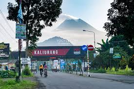
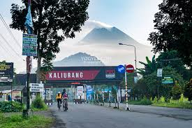

Wisata Sejarah & Budaya
Beberapa destinasi wajib kunjung meliputi:
- Candi Prambanan - Candi Prambanan adalah candi Hindu terbesar di Indonesia, dibangun pada abad ke-9 Masehi oleh Dinasti Sanjaya dari Kerajaan Mataram Kuno. Candi ini didedikasikan untuk Trimurti, yaitu tiga dewa utama Hindu: Brahma, Wisnu, dan Siwa, dengan Candi Siwa sebagai candi utama.
Candi ini juga terkenal dengan legenda "Roro Jonggrang", seorang putri yang dikutuk menjadi arca karena menolak lamaran Bandung Bondowoso. Setelah lama terlupakan, Candi Prambanan ditemukan kembali pada abad ke-19 dan dipugar pada abad ke-20. Pada tahun 1991, Prambanan diakui sebagai "Situs Warisan Dunia UNESCO" dan kini menjadi destinasi wisata budaya populer, termasuk untuk pertunjukan sendratari Ramayana. - Keraton Yogyakarta - Keraton Yogyakarta, atau Ngayogyakarta Hadiningrat, adalah istana resmi Kesultanan Yogyakarta yang dibangun pada tahun 1755 oleh Sultan Hamengkubuwono I, pendiri Kesultanan Yogyakarta.
Pendirian keraton ini merupakan hasil dari Perjanjian Giyanti yang membagi Kerajaan Mataram menjadi dua, yaitu Kesultanan Yogyakarta dan Kasunanan Surakarta. Keraton Yogyakarta tidak hanya berfungsi sebagai tempat tinggal Sultan dan keluarganya, tetapi juga menjadi pusat kebudayaan Jawa dan simbol kekuasaan politik serta spiritual.
Arsitekturnya mencerminkan perpaduan antara budaya Jawa dan elemen Islam, dengan tata ruang yang penuh makna filosofis. Keraton ini dirancang dengan orientasi ke Gunung Merapi di utara dan Laut Selatan di selatan, yang melambangkan hubungan kosmis antara manusia, alam, dan Tuhan. Hingga kini, Keraton Yogyakarta tetap menjadi pusat tradisi dan budaya Jawa, serta menjadi daya tarik wisata yang populer, dengan berbagai pertunjukan seni dan acara kebudayaan yang digelar secara berkala. - Taman Sari - Taman Sari adalah kompleks taman dan pemandian yang dibangun pada tahun 1758 oleh Sultan Hamengkubuwono I sebagai bagian dari Keraton Yogyakarta.
Taman ini berfungsi sebagai tempat rekreasi, meditasi, dan pemandian bagi keluarga kerajaan. Arsitektur Taman Sari mencerminkan perpaduan antara budaya Jawa dan pengaruh asing, termasuk Eropa dan Portugis, dengan kolam-kolam, taman, serta terowongan bawah tanah yang rumit. Salah satu bagian terkenalnya adalah Umbul Pasiraman, kolam pemandian yang digunakan oleh Sultan dan permaisuri.
Seiring waktu, Taman Sari mengalami kerusakan akibat gempa bumi dan perubahan fungsi lahan. Meskipun demikian, kompleks ini kini menjadi objek wisata sejarah yang populer, menarik banyak pengunjung untuk menikmati keindahan arsitektur dan sejarahnya. Taman Sari juga menjadi simbol warisan budaya Yogyakarta yang kaya.


 
